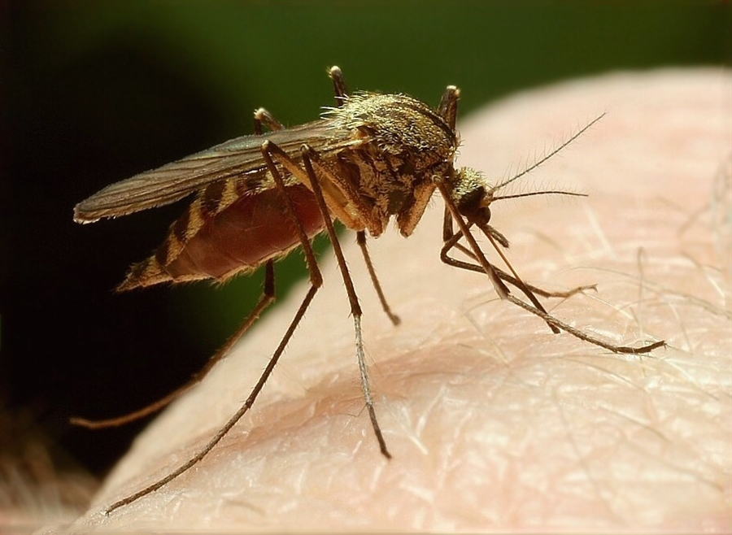
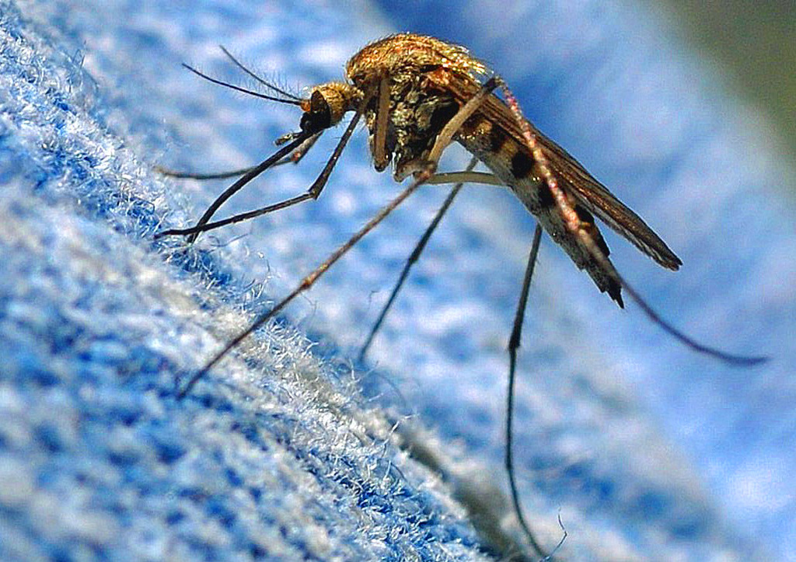
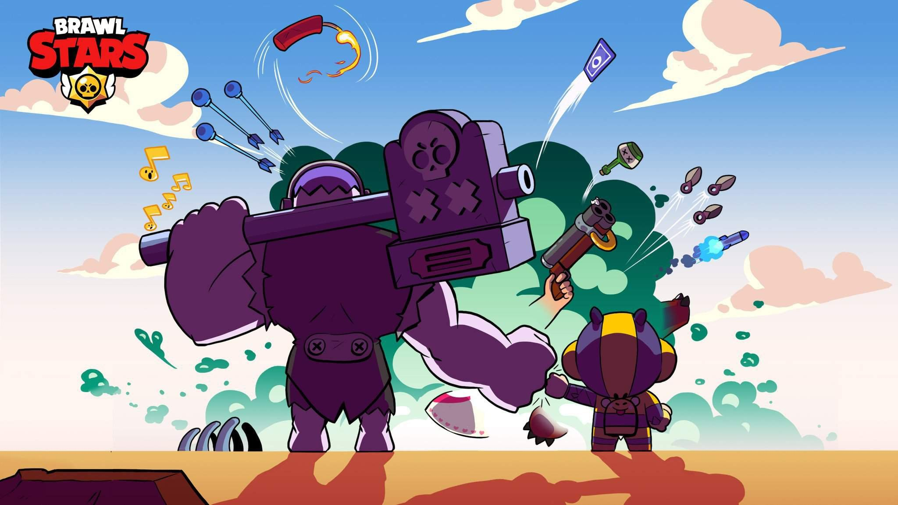
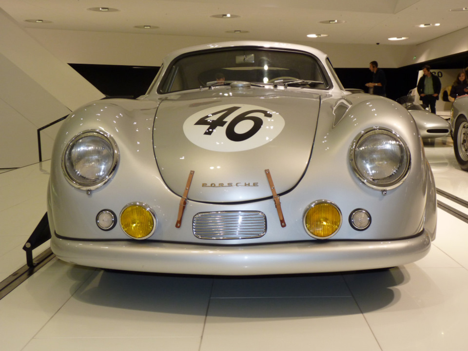

ахахаххахахахаххахаххахаххахахахахаххаххахахахаххахахахаххахах
гавари какой пароль лайк фигня тикток кароль. камары снюсоеды я во пскове тут много снюсоедов они пастянно кусают а укусы проподают пять лет  я хочу показать бабл квас
Компания выпускает спортивные автомобили класса «люкс», а также внедорожники. Производство Porsche в значительной мере кооперируется с Volkswagen. Бок о бок с участием в автоспорте ведётся работа над совершенствованием конструкции автомобиля (и его узлов) как такового: в разные годы были разработаны синхронизаторы механической КПП, автоматические КПП с возможностью ручного переключения (впоследствии — с кнопками переключения на руле), турбонаддув для серийного автомобиля, турбонаддув с изменяемой геометрией крыльчатки турбины в бензиновом двигателе, электронно-управляемая подвеска и так далее[5]. 50,1 % акций компании принадлежат компании Porsche Automobil Holding SE, с декабря 2009 г. 49,9 % акций принадлежат Volkswagen AG. Porsche — публичная компания, часть её акций обращается на Франкфуртской фондовой бирже и во всемирной электронной системе Xetra. Крупные пакеты акций принадлежат семьям Порше и Пиех. Президент и главный управляющий компании с 1993 года — Венделин Видекинг. Выручка компании за 2009/2010 финансовый год составила 7,79 миллиардов евро, что является для компании абсолютным рекордом за всю историю. За этот же отчётный период продано 81 850 автомобилей, а произведено 89 123. Также компания уже в течение длительного времени ведёт активную деятельность по организации спортивных клубов (клубы Porsche есть во многих странах Европы и Америки) и соревнований среди различных классов своих машин, регулярно проводятся несколько кубковых соревнований. Этому направлению её деятельности посвящена компьютерная игра Need for Speed: Porsche Unleashed К моменту выпуска первого автомобиля под своим именем Фердинанд Порше успел накопить немалый опыт. Основанное им 25 апреля 1931 года предприятие Dr. Ing. h.c. F. Porsche GmbH под его началом уже успело поработать над такими проектами, как 6-цилиндровый гоночный Auto Union и Volkswagen Käfer, ставший одним из самых продаваемых автомобилей в истории. В 1939 году был разработан первый автомобиль компании — Porsche 64, который стал прародителем всех будущих Porsche. Для постройки этого экземпляра Фердинанд Порше использовал многие компоненты от Volkswagen Käfer. В течение Второй Мировой компания занималась выпуском военной продукции — штабных автомобилей и амфибий. Фердинанд Порше принимал участие в разработке немецких тяжёлых танков «Тигр P», а также сверхтяжёлого танка «Маус». В декабре 1945 года он был арестован по обвинению в военных преступлениях и помещён в тюрьму, где провёл 20 месяцев. В то же время его сын Фердинанд (краткое имя Ферри) Антон Эрнст решил начать выпуск собственных автомобилей. В Гмюнде Ферри Порше вместе с несколькими знакомыми инженерами собрал прототип 356-го с мотором в базе и алюминиевым открытым кузовом и начал подготовку к его серийному производству. В июне 1948 года этот экземпляр был сертифицирован для дорог общего пользования. Как и 9 лет назад, тут вновь были использованы агрегаты от Volkswagen Käfer, включая 4-цилиндровый мотор воздушного охлаждения, подвеску и коробку передач. У первых серийных машин было принципиальное отличие — двигатель перенесли за заднюю ось, что позволило удешевить производство и освободить пространство для двух дополнительных мест в салоне. Спроектированный кузов обладал очень хорошей аэродинамикой — Cx равнялся 0,29. В 1950 году компания вернулась в Штутгарт.
.jpg)
С момента возвращения в Штутгарт все кузовные панели изготавливались из стали, от алюминия отказались. Завод начинал с купе и кабриолетов и 1100-кубовых моторов мощностью всего в 40 лошадиных сил(29,42 кВт), но скоро выбор расширился: к 1954 году продавались версии 1100, 1300, 1300A, 1300S, 1500, и 1500S. Конструкция постоянно улучшалась: объём и мощность двигателей продолжили свой рост, появились дисковые тормоза на всех колёсах и синхронизированная КПП, были предложены новые варианты кузовов — хардтопы и родстеры. Агрегаты от Volkswagen постепенно заменялись на собственные. Например, в период выпуска серии 356А (1955—1959) уже можно было заказать двигатель с четырьмя распредвалами, двумя катушками зажигания, и другими оригинальными компонентами. Серию А сменила B (1959—1963), а её — C (1963—1965). Общий объём выпуска всех модификаций составил немногим более 76 тысяч. Параллельно создавались модификации для гонок (550 Spyder, 718 и др.). В 1951 году Фердинанд Порше в возрасте 75 лет скончался от сердечного приступа — его здоровье было подорвано пребыванием в тюрьме. В конце 1950-х был изготовлен прототип Porsche 695. У руководства компании на этот счёт не было единого мнения: 356-й успел заработать себе хорошую репутацию, поэтому для небольшой семейной фирмы Porsche, переход на новую модель был связан с повышенным риском. Но конструкция образца 1948 года устаревала всё быстрее и резервов для её обновления почти не оставалось. Поэтому в 1963 году на автосалоне во Франкфурте был представлен Porsche 911. Основные моменты в конструкции остались теми же (заднее расположение оппозитного мотора и задний привод), но это уже был современный спортивный автомобиль с классическими линиями кузова в духе Porsche 356. Автором дизайна стал Фердинанд Александр «Бутци» Порше, старший сын Ферри Порше. Первоначально вместо индекса «911» должен был использоваться другой — «901». Но комбинация из 3 цифр с нулём посередине уже была зарезервирована за Peugeot. Автомобиль стал называться 911, но цифры 901 никуда не исчезли: так стали называть 911 модель по внутризаводской номенклатуре (1964—1973). Мотор в первые 2 года выпуска был один — 2-литровый 130-сильный. В 1966 году на конвейер встала модификация Targa (разновидность открытого кузова со стеклянной крышей); после окончания в 1965 году выпуска кабриолетов 356-й серии, они как таковые не появлялись в модельном ряду компании вплоть до 1982 года. В конце 1960-х годов колёсную базу машины увеличили и стали оснащать моторы увеличенного объёма c механическим впрыском. Вершиной эволюции 901-х стали «боевые» модификации Carrera RS 2.7 и Carrera RSR начала 1970-х. Слово Carrera появилось в названии спортивных версий 356 в середине 1950-х — так увековечили память о победе в гонке Каррера Панамерикана 54-го года, после которой марка получила широкую известность в Северной Америке. Porsche 914 на ралли классических автомобилей в Саксонии, 2010 год В конце 1960-х годов была запущена в серию ещё одна новая модель — Porsche 914. В то время компании Volkswagen понадобилось добавить в модельный ряд какой-нибудь спортивный автомобиль, а Porsche требовался преемник модели 912 (удешевлённый 911-й с мотором от 356-го). Поэтому было решено объединить усилия, и в 1969 году начался выпуск автомобиля под названием VW-Porsche 914, центральномоторной Targa с 4- и 6-цилиндровыми моторами. Детище альянса не оправдало ожиданий — довольно необычная внешность и неудачная маркетинговая политика (из-за «смешанного» названия VW-Porsche) негативно отразились на продажах. Всего за 7 лет выпуска было изготовлено около 120 тысяч таких машин. 1972—1981: Правление Эрнста Фюрманна
.jpg)
Porsche 944 — из линейки переднемоторных Porsche 80-х годов В 1972 году юридический статус фирмы сменился с партнёрства с ограниченной ответственностью на открытую (публичную). Dr. Ing. h.c. F. Porsche KG перестала быть семейным предприятием, и теперь называлась Dr. Ing. h.c. F. Porsche AG; семья Порше утратила непосредственный контроль над делами компании, однако доля капитала в ней у Ферри и его сыновей значительно превышала долю семьи Пиех. После реструктуризации Ф. А. Порше с братом Гансом-Петером основал компанию Porsche Design, выпускающую эксклюзивные очки, часы, велосипеды и другие престижные вещи. Внук Ф. Порше, Фердинанд Пиех, перешёл в Audi, а затем в Volkswagen, где впоследствии стал генеральным директором концерна. Первым руководителем компании, который был не из семьи Порше, стал Эрнст Фюрманн, до этого работавший в отделе разработки двигателей. Одно из первых его решений на новой должности — замена 911-й серии спорткаром классической компоновки (передний двигатель — задний привод) — моделью 928 с 8-цилиндровым мотором. При его правлении на конвейер был поставлен ещё один переднемоторный автомобиль — Porsche 924. После дебюта на автосалоне в Париже 1974 года модификации Turbo, развитие линейки 911 (к тому времени в производство пошла модернизированная серия 930 (1973—1989) фактически остановилось до начала 1980-х, пока Фюрманн не был снят с должности. Но его проекты продолжали выпускаться и дальше: последние автомобили Porsche с передним расположением мотора покинули стены завода в 1995 году. На смену 914-му в 1976 году пришли сразу две новые машины — 924 и 912 (теперь с мотором Volkswagen 2.0), который просуществовал всего год. История появления 924-го схожа с 914-м — компания Volkswagen не отказывалась от идеи собственного доступного спорткара и предложила инженерам Porsche разработать соответствующий проект. Им предоставили полную свободу действий, кроме разработки двигателя и КПП — ими должны были стать агрегаты от Audi. Ещё до окончания работ, новое руководство Volkswagen, во главе с Тони Шмюкером, засомневалось в целесообразности выпуска такой машины, так как в 1973 году начался нефтяной кризис. Тогда проект был выкуплен у Volkswagen. По сравнению с 911 моделью это была совсем другая конструкция: современная внешность, классическая компоновка и развесовка, близкая к идеальной, экономичные 4-цилиндровые моторы с водяным охлаждением. Porsche 924 пользовался спросом, и у него был хороший потенциал, что подтверждается постоянным обновлением и пополнением линейки. Уже через 3 года после начала продаж в ней появилась версия с турбонаддувом, а ещё через три года стали выпускать 944-ю — её преемницу. В целом машина осталась той же, а изменения были эволюционными — улучшились многие показатели, а во внешности самым заметным отличием были расширенные крылья, перешедшие по наследству от спецверсии 924 Carrera GT. Эти две линейки производились вместе 6 лет, пока в 1988 году модель не сняли с производства (всего продали почти 150 тысяч). Конструкция 944-й заметно отличалась от 924-й: двигатель представлял собой «половинку» V8 от модели 928, другие крупные узлы тоже заменили на фирменные. За 9 лет выпустили 160 тысяч 944-х, появилось много модификаций — S, S2, Turbo, Cabriolet и т. д. Последним витком эволюции переднемоторных Porsche стала модель 968 (1992—1995). Решение Фюрманна о замене 911-й модели оказалось неудачным: с 1978 по 1995 год было выпущено около 60 тысяч экземпляров 928-х, а 911-х за этот срок — в несколько раз больше. Вялый коммерческий старт этого автомобиля дал понять, что Porsche 911 незаменим. В период 1974—1982 годов, когда основной приоритет был отдан развитию моделей 924 и 928, в ряду 911 наблюдалось почти полное затишье. При смене поколений 930-я получила новые энергопоглощающие бамперы и базовый двигатель 2,7 л. В 1976 году им стал 3-литровый. На следующий год линейка была упрощена — вместо модификаций 911, 911S и 911 Carrera ввели единую, под названием 911SC и с пониженной мощностью. В то же время 911 Turbo получил новый мотор — 3,3 л, 300 л. с. Porsche 911 Turbo был одним из самых динамичных автомобилей тех лет, он разгонялся до 100 км/ч за 5,2 с и достигал максимальной скорости в 254 км/ч.
